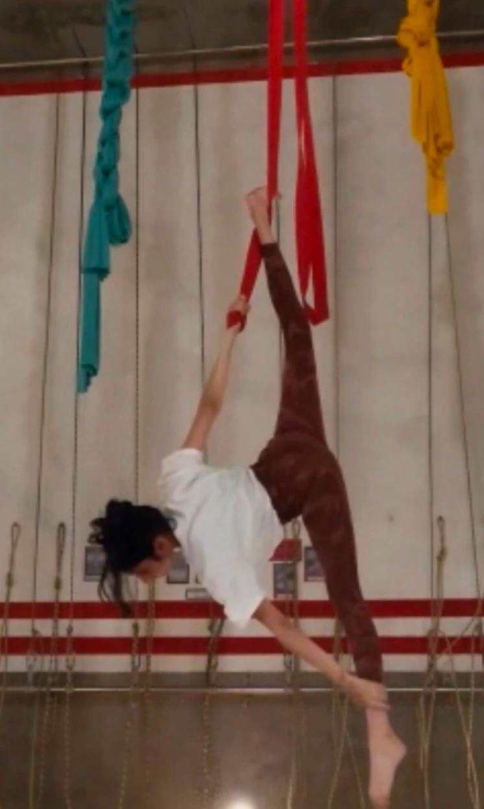
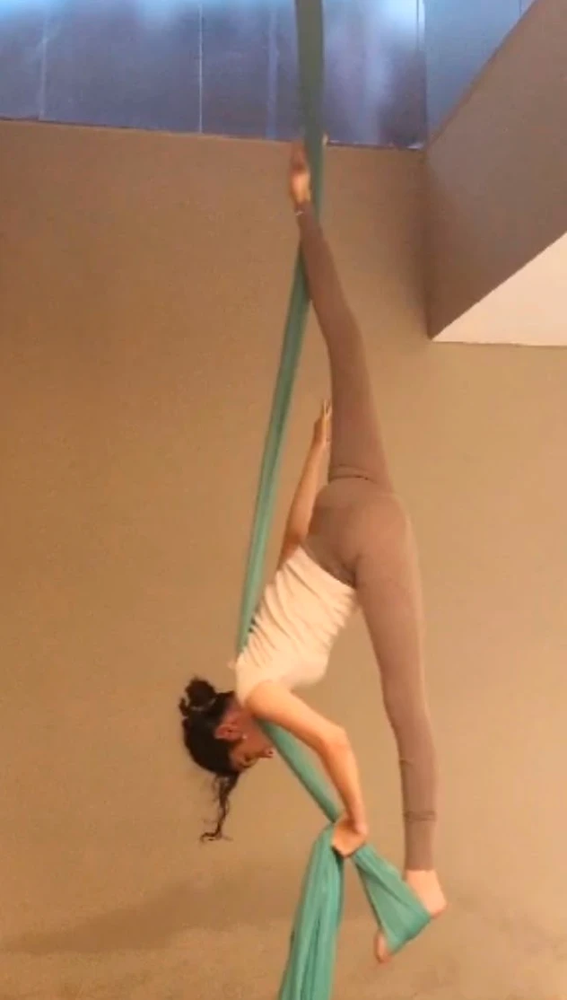

Aerial silks, straps & hoop
Four years of drops, inversions and transitions several metres off the ground, including an international aerial competition.
- Training
- 4 years · silks, straps and hoop
- Competition
- International aerial competition
- Focus
- Drops, transitions, choreography
- Interest
- Rotational mechanics


Aerial work means performing suspended movements, inversions, drops and transitions on fabric silks, straps and a hoop. Even movements that look effortless take real strength and precision.
Most of my training goes into single movements, especially transitions that change grip, rotation and body position. A new sequence gets broken into small pieces and repeated until I can do it safely and consistently.
Physics in aerial work
Torque, tension, angular momentum and centre of mass all show up in the air. Pulling my arms and legs in during a rotation speeds it up, and small changes in grip and alignment change how a drop unfolds. I use that to refine grip and timing mid-spin.
Understanding the physics behind a movement makes it both safer and more expressive.
Losing balance or not completing a move is a normal part of learning, as long as it happens under safe training conditions. Some drops that feel natural now once seemed impossible. Getting there took strength and confidence, built slowly.
I also enjoy choreography: working out how movements connect, how they respond to the music, and how to make a technically demanding sequence look fluid.